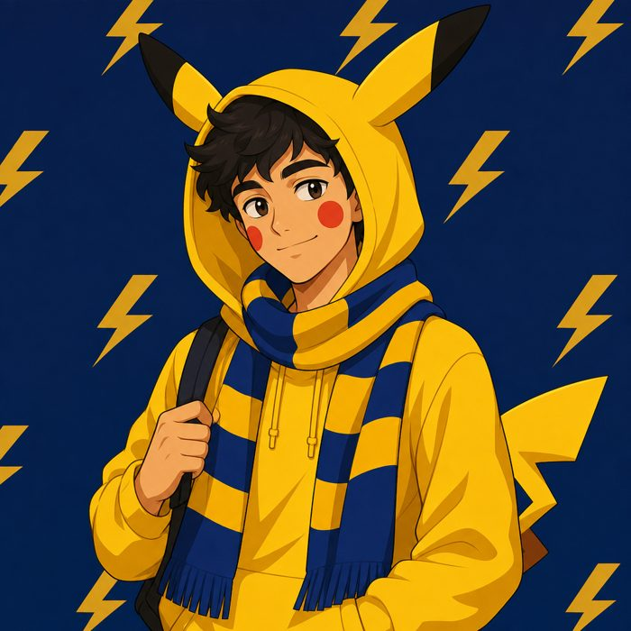

Joaquín Just
Pikachu
Estudiante de Ingeniería en Sistemas y fanático del fútbol: hincha de Boca Juniors de los que no se pierden un partido. Como Pikachu, arranca rápido, mete intensidad y se recarga con cada gol de la Bombonera.
- Estudia Sistemas
- Hincha de Boca Juniors
- Tipo eléctrico